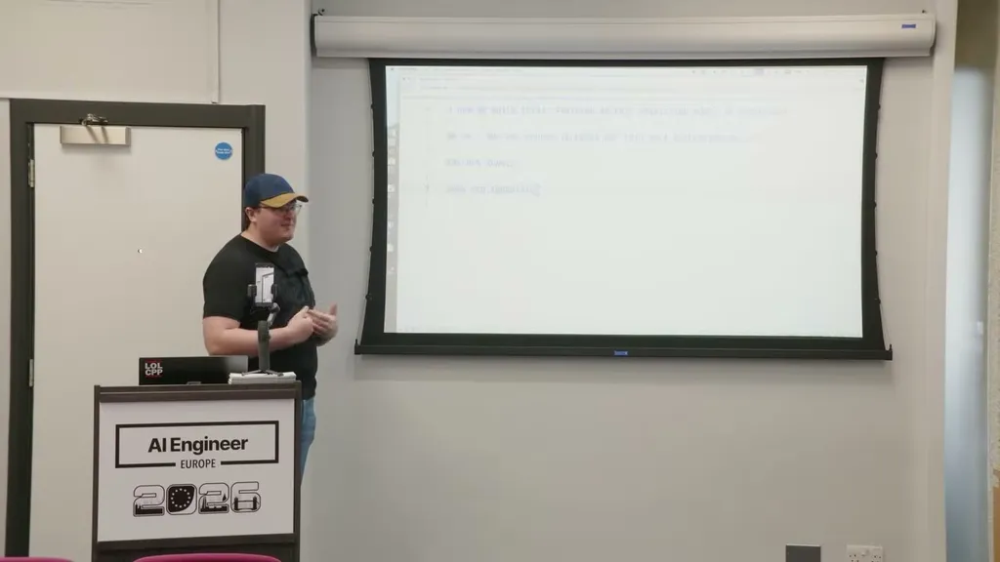
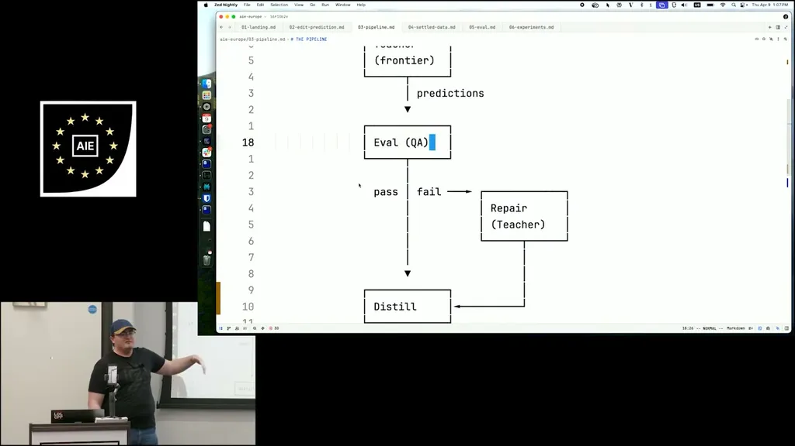
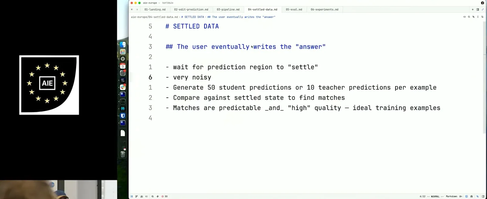
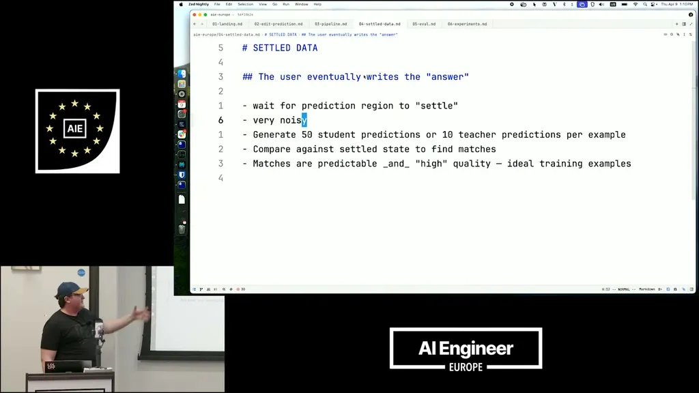
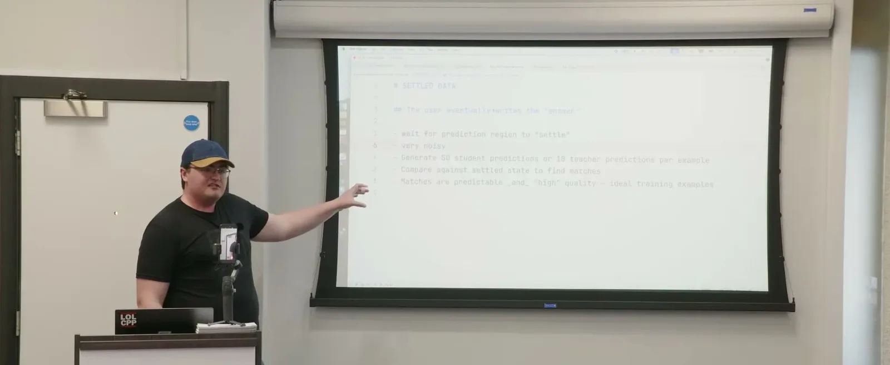

Edit prediction gives a model the code region around the cursor plus recent edits, cursor position, type/variable definitions, and diagnostics, and asks it to predict the user's next edit on every keystroke. Because it runs on every keystroke, it needs a small, fast, specialized fine-tuned model rather than a general-purpose one.
“giving the model a region of code around the cursor, asking them to predict the next edit that you're going to make”
▶ watch at 00:31
Training data comes from distillation: a frontier model is given the same production input the student will see and asked what prediction it would make. This is harder than it sounds because a frontier model asked the same question many times gives inconsistent answers, so Zed runs offline heuristic checks (e.g. is the prediction just undoing the edit, or ignoring the given boundary) and sends failing predictions to another frontier-model pass to repair before they become training targets.
“This is a pretty difficult process as it turns out, even though the frontier models are pretty smart”
▶ watch at 01:32“If you ask them 100,000 times, they're going to give you 100,001 answers, right”
▶ watch at 01:32“once we've repaired the bad predictions, then we can essentially turn what the teacher made into the expected output of the student model or Zed 2”
▶ watch at 02:35
Full training runs use around 100,000 examples at peak, smaller experiments 10,000-50,000. A newer data source, 'settled data,' waits for the user to stop editing a region and snapshots what they actually wrote -- but this is noisy, since the user could change their mind or an agent could rewrite the region entirely before it settles.
“We're generally doing 100,000 examples to train a model. Like, that's our peak”
▶ watch at 03:38“you could change your mind, you could have an agent come in and rewrite it completely”
▶ watch at 04:09
Filtering settled examples by generating 10 frontier-model predictions per example and checking closeness via Levenshtein distance would cost about a million frontier-model requests for 100,000 examples, which is prohibitively expensive. Because Zed's own student model (Zeta2) now approaches the teacher's prediction quality, they instead run 50 cheap predictions from the student checkpoint for the same filtering, at near-zero cost. The 'settled' judgment itself is simply that the user stopped editing that region for 10 seconds.
“For 100,000 examples, you're then doing, you know, a million frontier model requests. That is prohibitively expensive”
▶ watch at 05:11“our student models or Zed 2 is approaching the teacher in terms of quality of prediction”
▶ watch at 05:44“right now we just do like you stop editing that area for 10 seconds”
▶ watch at 10:18
Offline evaluation runs on a held-out test set and tracks a Levenshtein-based n-gram comparison metric plus a reversal ratio, which flags predictions that simply undo what the user just typed, alongside production kept rate.
“we're tracking this reversal ratio, reversals being it's undoing exactly what you just typed”
▶ watch at 07:16
| Stance | Claim | t |
|---|---|---|
| asserts | Edit prediction gives the model the code region around the cursor plus recent edits, cursor position, type/variable definitions, and diagnostics to predict the next edit on every keystroke. | 00:31 |
| warns | Generating consistent, high-quality predictions from a frontier teacher model is difficult even though the models are capable. | 01:32 |
| warns | Asking a frontier model the same prediction question repeatedly yields inconsistent answers. | 01:32 |
| asserts | Predictions that fail offline heuristic checks are repaired by another frontier-model pass, and the repaired output becomes the student model's training target. | 02:35 |
| asserts | Training runs on roughly 100,000 examples at peak, with smaller experiments using 10,000-50,000. | 03:38 |
| warns | Waiting for a code region to 'settle' before snapshotting it is noisy because the user could change their mind or an agent could rewrite the region entirely. | 04:09 |
| warns | Filtering settled data with 10 teacher predictions per example would cost about a million frontier-model requests for 100,000 examples, which is too expensive. | 05:11 |
| asserts | Because Zeta2 now approaches teacher-level prediction quality, Zed runs 50 cheap student-model predictions instead of the frontier model to filter training data near the settled state. | 05:44 |
| asserts | The heuristic for a region being 'settled' is simply that the user stops editing it for 10 seconds. | 10:18 |
| asserts | Offline evaluation tracks a reversal ratio -- predictions that just undo what the user typed -- alongside a Levenshtein-based n-gram metric and production kept rate. | 07:16 |
Machine-readable copy embedded in this page (script#ontology) and in the corpus ontology.